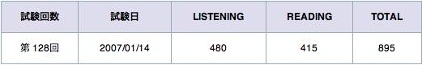
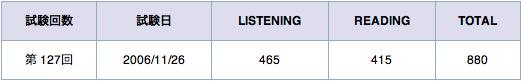

TOEIC 第145回結果 : 30点落ちた！
リーディングの点数がピクリとも変わっていません。
そんなに間違えたつもりないのにリスニングがしっかりと落ちているのが残念です。
「やっぱ勉強しないとだめですかね。」と前回つぶやいているにも関わらずiknowをチョロっとやっただけにとどまっているのが人に厳しく自分に甘い私らしいです。
映画やドラマを見ているだけではもう点数あがらないかなぁ？

前回: 第128回の結果

前々回: 第127回の結果
楽天で TOEIC 対策:
TOEIC テスト総合対策 860点突破!
Amazonで TOEIC 対策:
関連記事:
・TOEIC128回 結果 - 侍ズム
・TOEIC第128回公開テスト 受検 - 侍ズム
・TOEIC第127回公開テスト結果通知 - 侍ズム
・TOEIC第127回公開テスト受検 - 侍ズム
・ブログでTOEIC730:TOEIC 第145回 2009年03月15日（日）の成績発表 - livedoor Blog（ブログ）